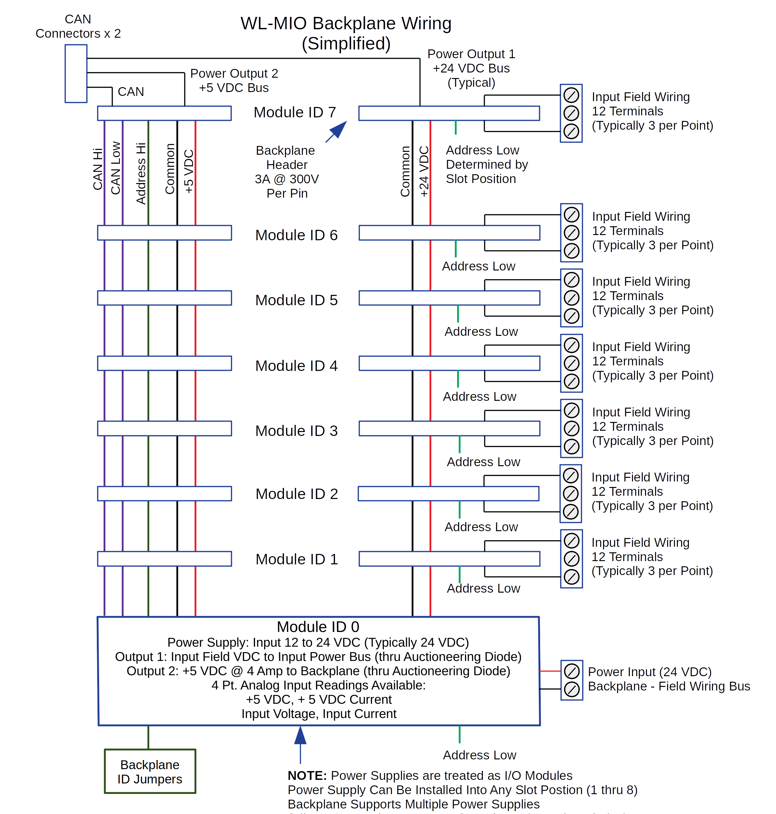

The VPE-6000 Backplane
The backplane is the heart of the WL-MIO system. There are no active parts, only the terminal blocks, the I/O module sockets complete with card guides, and the backplane ID jumpers. The backplane wiring is divided into two sections:
- The Field Wiring side - each module has 12 I/O terminal blocks and 3 Shield terminal blocks
- The Bus Power and CAN bus communication side
Typical WL-MIO System Field Wiring Diagram

Every signal on the backplane headers is doubled for redundancy.
View and download the VPE-6000 schematic.
Please refer to the individual module specifications for more details
Back to Top
The WL-MIO I/O Modules
Each WL-MIO module has exactly the same footprint and wiring connections. The VPE-6020 REaspberry Pi carrier module has a slightly different geometry to accomodate the RPi, however the I/O connections pins are the same as the other modules.
Here is a typical block diagram of a module (4 Channel Analog Input Module SDAFE (mA and VDC), 15 Bit)
Every WL-MIO module has the same design:
- 12 I/O field wiring termination points
- An ARM processor
- Isolated (1 kV) CAN bus driver
- Isolated (1 kV) 5 VDC to DC Converter
- Backplane ID Logic
- Field Voltage can be either local or jumpered in from the main input field voltage
Please refer to the individual module specifications for more details
Back to Top